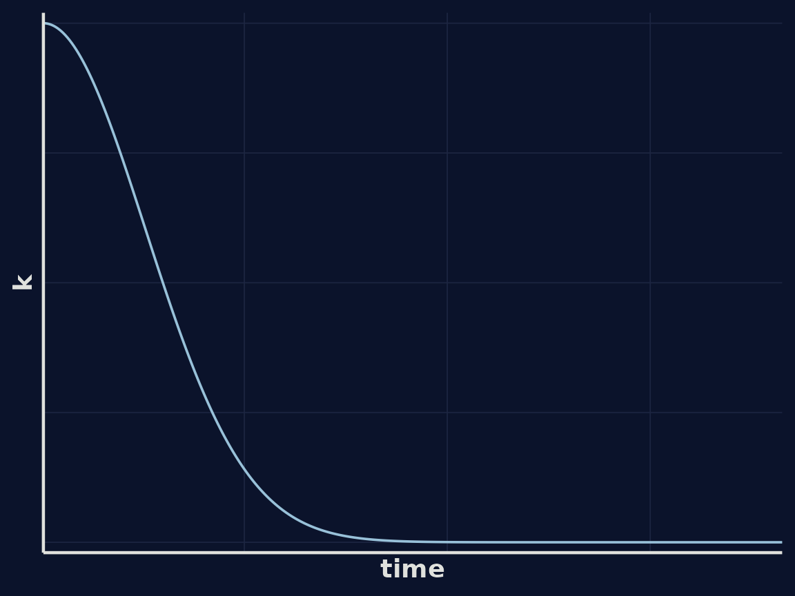
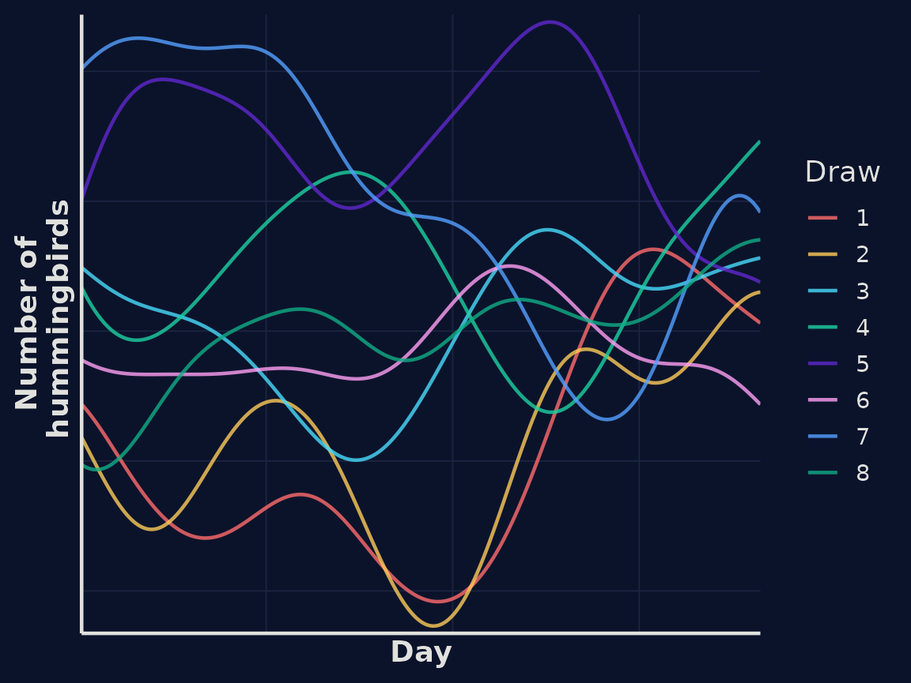

Gaussian Processes: a Gentle Introduction
Primer.Rmd1. Why Gaussian Processes?
Motivation and story
Many real-world phenomena change smoothly but unpredictably — rainfall
over time, temperature, the number of birds visiting a feeder, or
website traffic.
Problem framing
We often want to infer the underlying pattern from sparse,
noisy observations without imposing a fixed parametric
form. As much as possible, we want to let the data shape the result.
Enter Gaussian Processes
A Gaussian process (GP) is a flexible, probabilistic approach to
modelling unknown functions. It lets us predict and quantify
uncertainty — not just what the function might be, but how confident we
are.
2. What is a Gaussian Process?
Plain-language explanation
A Gaussian process (GP) is a probability distribution over functions, in the same way that a normal distribution is a probability distribution over numbers.
Just as a normal distribution says, “a random variable is likely to take values near the mean, with some spread determined by the variance”, a Gaussian process says, “a random function is likely to take shapes near the mean function, with variability determined by the kernel”.
Building intuition
Instead of committing to a fixed equation (like fitting a straight
line or a polynomial), a GP says:
> “I don’t know the exact form of the function — but I do have
beliefs about how it behaves.”
Those beliefs are about how points in time relate to one another — whether nearby points tend to be similar, how far that similarity extends, and how much uncertainty there is. All of that structure is encoded in the kernel function.
Once we’ve defined a kernel, we can imagine an infinite number of possible functions that are consistent with it and the GP represents a probability distribution over all of them.
Mathematical form
A Gaussian process is defined by a mean function and a kernel (covariance) function .
For simplicity, we often assume the mean function is zero — that is:
This assumption is common because the kernel captures the interesting structure (smoothness, periodicity, etc.), and we can always add a non-zero mean function later if needed.
With that simplification, we write:
This means that for any set of input points , the corresponding function values follow a multivariate normal distribution with:
- a zero mean vector, and
- a covariance matrix with entries .
3. A Real Example: Hummingbirds at the Feeder

To make these ideas more concrete, let’s look at a simple and intuitive example.
Imagine we’ve set up a hummingbird feeder in our garden, and we want
to model the number of hummingbirds visiting over
time.
We don’t have a fixed equation for how that number changes, but we
do have some prior beliefs:
- The number of hummingbirds on one day is likely to be similar to the
number on nearby days.
- Those similarities weaken as we compare days that are further
apart.
- The visits change smoothly rather than jumping around erratically.
These are exactly the kinds of assumptions a Gaussian process can represent — and they are encoded in our kernel.
3.1 Describing the kernel
We’ll use a radial basis function (RBF) kernel, which is one of the simplest and most widely used choices. It encodes the idea that points closer together in time are more strongly correlated, and that this correlation decays smoothly zwith distance.
The RBF kernel is defined as:
-
controls the overall variability (amplitude) of the function.
- is the length-scale, which determines how quickly correlation falls off with time.
A short length-scale means the number of hummingbirds can change
rapidly from day to day (a “wiggly” world).
A long length-scale means it changes more gradually (a “smooth”
world).
3.2 Visualising the kernel
Let’s look at what the kernel function looks like as a function of distance in time:
Using this kernel, we can draw some random functions from our GP representing simulated estimates of the number of hummingbirds at our feeder over time.
In our first example correlation between hummingbird numbers falls quickly as the distance between time points increases. We migth assume that hummingbird numbers vary more slowly, perhaps influenced by seasonal dynamics. We can encode this assumption by modifying our kernel.

Using this kernel, we can again draw some random functions from our GP representing simulated estimates of the number of hummingbirds at our feeder over time. We can see in this example the lines a smoother.
